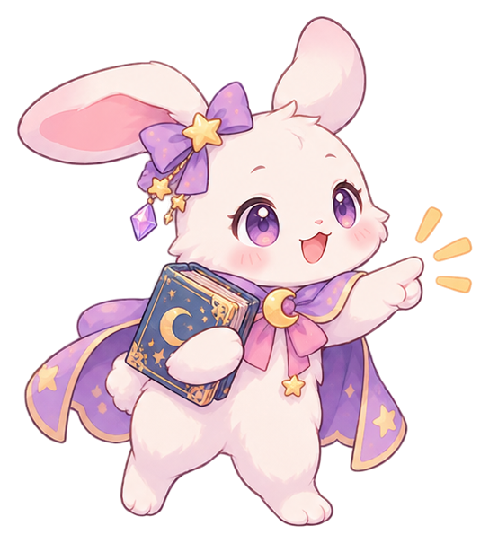
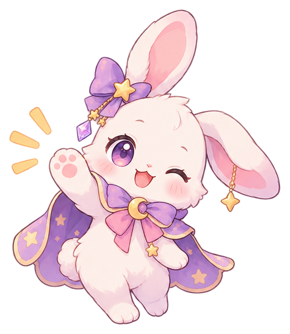
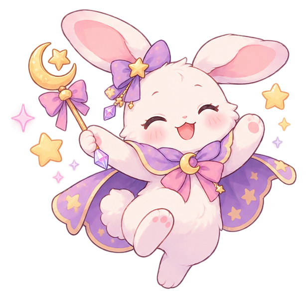

TEACHER VERSION · CAMBRIDGE GRADE 6
Operations +
BODMAS Lab
Short reasoning cycles, changing interaction modes, and a TKA Geometry & Measurement bridge.

Today's rule:
Decide what the numbers are doing before calculating.
QUICK CHECK1 / 5

SCREEN BREAK
Warming Up complete.
Please go back to Zoom now.
The next part is Lesson with Miss.
OPERATION DETECTIVE1 / 8
CHALLENGE 11 / 9

SESSION SUMMARY
Route complete.
The useful evidence is the mathematical action: choosing structure, building expressions, following BODMAS, and checking perimeter/area or units.